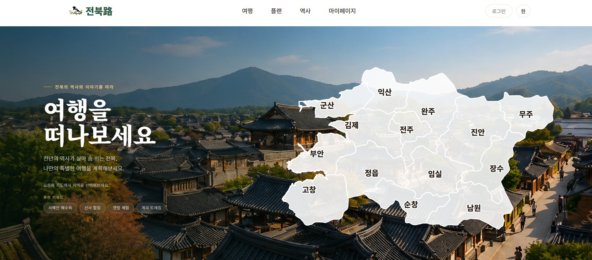
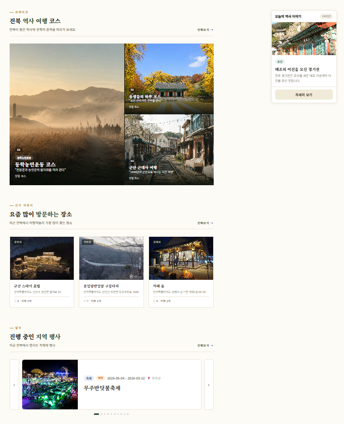

M-01
메인페이지 — GeoJSON → SVG 좌표 변환

⛰
01-main-hero.png
메인 페이지 전체 화면

🗺
01-main-map.png
SVG 행정구역 지도 클로즈업
전북 행정구역을 클릭해 지역별 여행지로 이동하는 인터랙티브 지도입니다.
통계청 행정경계 GeoJSON에서 전북 지역만 추출하고, 라이브러리에 의존하지 않고 위경도 좌표를 SVG 화면 좌표로 직접 변환해 지도를 그렸습니다.
위도는 북쪽이 클수록 큰 값이지만 화면 y축은 아래로 갈수록 커지므로, y좌표를 반전 처리해 지도가 뒤집히지 않도록 했습니다. 지역 클릭 시 지역명을 코드로 변환해 해당 여행지 목록으로 이동합니다.